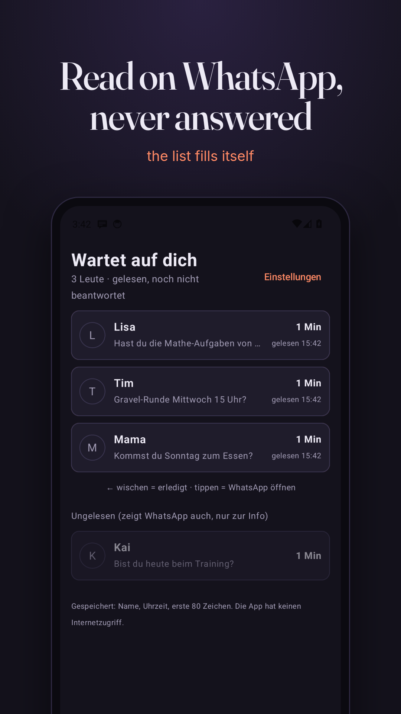
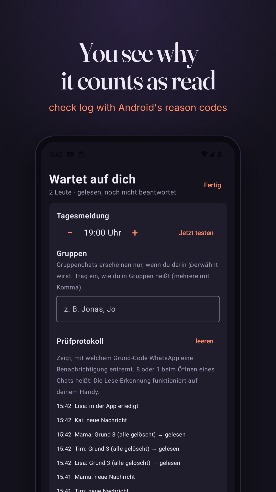

Never forget a WhatsApp you read but didn't answer
You open a WhatsApp chat, answer in your head, and never send it. WhatsApp stops showing the chat as unread the moment you open it. Antwort-Radar notices exactly that moment and keeps a short list of who is waiting for your reply, and for how long.
Free Android app · no internet permission · no account · runs on GrapheneOS · built for people with ADHD
Download APK Source code on GitHub

How it works
| You open a chat, tap or swipe the notification | The chat moves to Wartet auf dich (waiting for you) |
| You reply from the notification | Marked done automatically |
| You reply inside WhatsApp | Swipe the entry away |
| Group chats | Only when someone @-mentions you |
| Once a day, at your hour | One reminder: "3 Leute warten auf dich" |
Nothing to type in
A to-do app only helps if you type the reminder in, right when your head is already somewhere else. Antwort-Radar fills the list on its own from the notifications Android already shows you.
Privacy
- No internet permission: the app cannot send anything anywhere.
- Reads WhatsApp notifications only, skips every other app.
- Keeps name, times and the first 80 characters per chat, in private app storage, excluded from backups.
- Open source under GPL-3.0.
Auf Deutsch
Du liest eine WhatsApp, antwortest im Kopf und schickst nie ab. Antwort-Radar merkt, wenn du einen Chat öffnest und nicht antwortest, und zeigt dir, wer seit wann auf dich wartet. Einmal am Tag kommt eine Sammelmeldung. Kostenlos, ohne Internet-Berechtigung, Open Source.
APK herunterladen